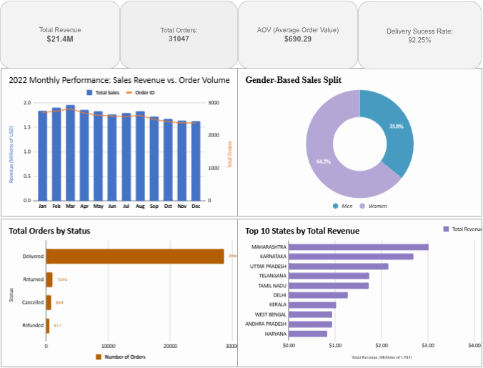

Data Science: Anaconda Data Scientist Python Professional Certificate (2026)
Visualization: WSO Power BI Certificate, ThinkCloudly Power BI Bootcamp
Language: French Delf B1
Language: English (Professional), French (Fluent), Chinese (Native), Shanghai Chinese (Native)
End-to-End Data Analysis | Advanced Excel & Dashboarding

The store operated with over 31,000 messy transactions. Sales trends were unclear, and demographic insights were missing, making inventory planning difficult.
I built an interactive dashboard to track Average Order Value ($690), identify March as the peak month, and discover that 64% of revenue comes from female customers.
SWITCH and VALUE logic to convert string-based quantities (e.g., "One") into numeric integers for accurate summation.
You can find the raw data, formulas, and technical appendix on my GitHub.
View GitHub RepositoryA multivariate research project analyzing how national wealth (GDP) and population dynamics influence athletic performance. This study uses a combination of descriptive statistics and regression modeling to identify the key drivers of international sporting success.
Tools: R, Tidyverse, ANOVA, VIF Analysis, ggplot2, Hypothesis Testing
Implemented a Gradient Descent optimizer from scratch in Python to predict red wine quality. This study identifies non-linear relationships within physicochemical data by performing a comparative analysis between Multivariate Linear and Polynomial regression models.
Tools: Python, NumPy, Pandas, Matplotlib, Gradient Descent, Statistical Modeling
A comparative study of five machine learning algorithms—Logistic Regression, LDA, Decision Trees, Random Forest, and Neural Networks—to classify handwritten digits from the MNIST dataset. The project focuses on balancing computational efficiency with predictive accuracy.
Tools: Python, PyTorch, Scikit-learn, CNN (LeNet-5), Data Augmentation, Hyperparameter Tuning
Bachelor of Science in Mathematics and Statistics
University of Sheffield